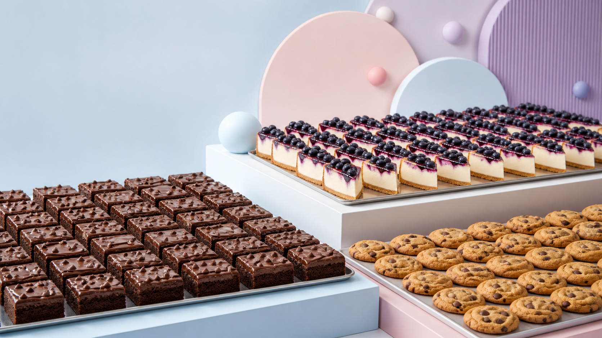

“The brownies gave us a dessert we could serve confidently during rush without changing presentation from plate to plate.”
Partner stories and business proof
Good products.
Better repeats.
This page demonstrates how testimonials can prove operational value—not only say that the desserts taste good. All quotes below are clearly marked illustrative until approved client testimonials are supplied.
Concept copy · not public claims
Illustrative testimonial formats
Tell the story
buyers need.
Replace each card with a verified quote, named business, approved logo and measurable outcome before production launch.
“Sampling helped us choose the right texture for our delivery menu, not just the most indulgent option.”
“A simple range and reliable reorder conversation made it easier to plan dessert across multiple locations.”
“The cookie line gave our coffee programme a natural add-on without adding specialist preparation.”
“Portion consistency gave the team cleaner costing and the guest a familiar experience at every event.”
“The supporting sauce and can formats helped turn one product order into a more complete dessert offer.”
How to make this page real
Collect proof with a purpose.
Choose representative partners
Mix café, restaurant, hotel, cloud kitchen, caterer and retail voices rather than six versions of the same customer.
Ask about operational change
Capture consistency, preparation time, menu performance, repeat ordering and service—not only “delicious.”
Verify every detail
Secure approval for names, logos, quotes, numbers and photography before publication.
Pair words with evidence
Add a product used, service context and a modest verified outcome to make each story useful to another buyer.
The strongest testimonial starts with a good sample
Give your team something real to evaluate.
Use the enquiry flow to shortlist products by business type, service format and expected requirement.